อดีต - ปัจจุบัน
วิวัฒนาการของอาวุธ
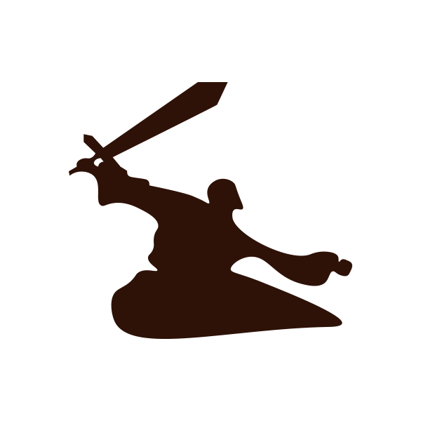
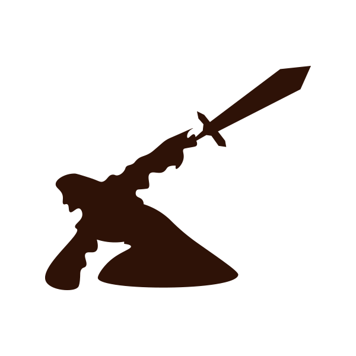
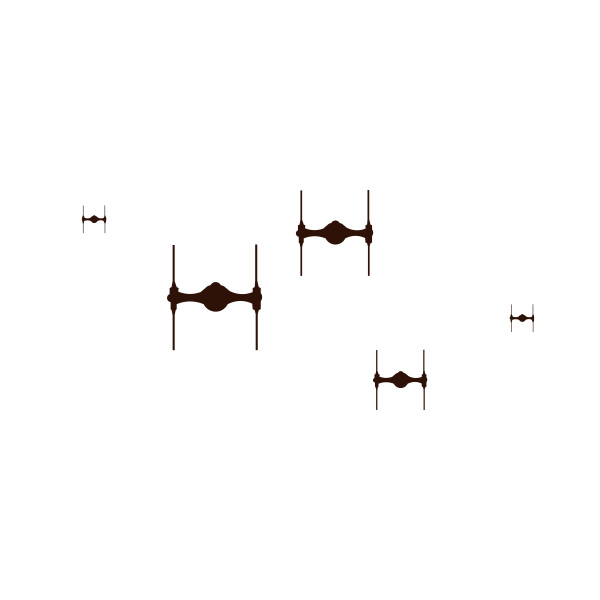
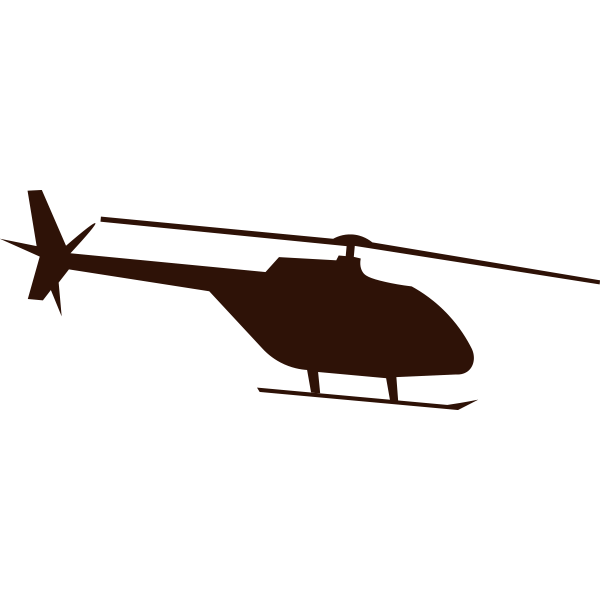
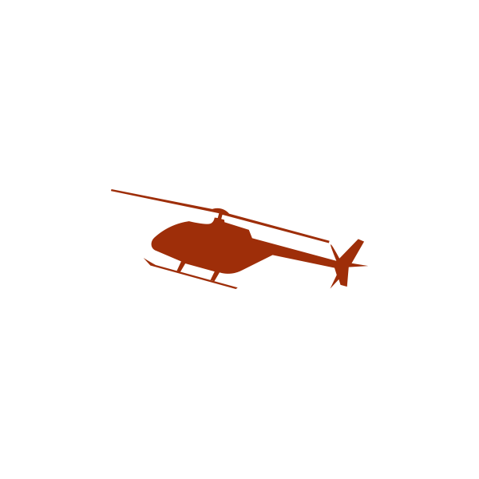
เลื่อนลงไปข้างล่าง
คลิกเพื่อปาขวาน
ขวาน ( 1,000,000 BC )
ใช้ในการตัดไม้ หรือหั่นไม้ รวมไปถึงการใช้เป็นอาวุธ โดยทั่วไปขวานจะประกอบด้วยสองส่วนหลักคือ ส่วนหัว และส่วนด้ามจับ โดยจะเห็นได้ว่าขวานเป็นตัวอย่างหนึ่งที่เป็นเทคโนโลยีเกี่ยวกับลิ่ม ที่ใช้ในการผ่อนแรง ขวานในสมัยโบราณ ส่วนหัวทำจากหิน และผูกเข้ากันกับด้ามไม้ ในขณะที่ขวานในยุคปัจจุบันส่วนหัว จะสร้างจากเหล็กและด้ามจับไม้ โดยขวานจะมีทั้งแบบที่ด้ามยาว และแบบด้ามสั้นขึ้นอยู่กับประเภทการใช้งานของขวานนั้นๆ
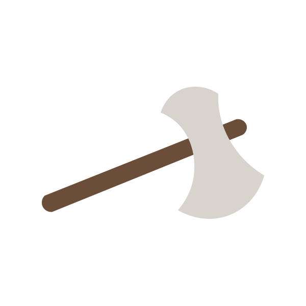
คลิกพื้นที่เพื่อจับปลา
หอก ( 300,000 BC )
ในยุคแรก ๆ พบหอกเป็นเพียงไม้แหลม ต่อมาพบหอกส่วนมากเป็นหินปลายแหลม นำมาผูกติดกับท่อนไม้ ซึ่งซึ่งจะพบในยุคหินเก่า ในขณะที่ในยุคหินใหม่นั้นจะมีการเหลาปลายหอกให้แหลมขึ้น ส่วนใหญ่ใช้ในการล่าสัตว์

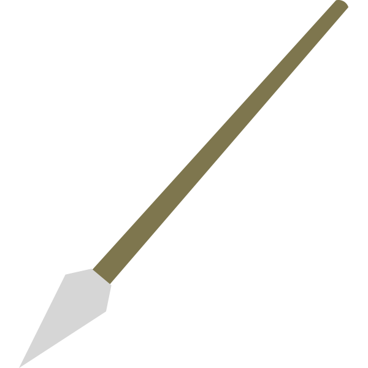
คลิก
ธนู (160,000 BC)
ธนูเป็นสิ่งที่มนุษย์ประดิษฐ์ขึ้นมาเพื่อใช้ในการล่าสัตว์และป้องกันตัวตั้งแต่ยุคดึกดำบรรพ์ การค้นพบหินเหล็กไฟ (flint) ที่ถูกพันด้ามไว้ด้วยเอ็น ปีกลูกธนู (Fletching) ถูกทำด้วยขนนกติดกาวและผูกติดกับลำธนูตั้งแต่ช่วงยุคหินกลาง
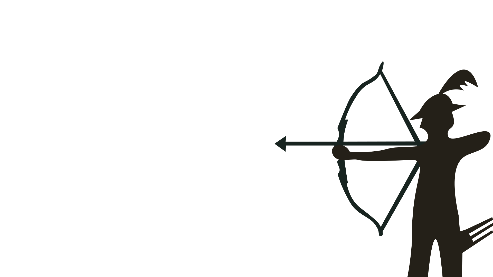
เลือกทีมที่คุณคิดว่าจะชนะ
ดาบ (140,000 BC)
ดาบได้รับการพัฒนาในยุคสัมฤทธิ์ ซึ่งพัฒนามาจากดาบสั้น ตัวอย่างแรกสุดที่มีอายุประมาณ 1600 ปีก่อนคริสตกาล ต่อมาคือยุคเหล็ก ดาบยังคงค่อนข้างสั้นและไม่มีครอสการ์ด สปาธา(Spatha) ซึ่งถูกพัฒนาขึ้นในกองทัพโรมันตอนปลาย ได้กลายเป็นบรรพบุรุษขของดาบยุโรปในยุคกลาง การถูกนำมาใช้ครั้งแรกเป็นดาบแห่งยุคการย้ายถิ่นฐาน และเฉพาะในยุคสมัยกลางยุครุ่งโรจน์เท่านั้น ที่ได้ถูกพัฒนาเป็นดาบอาวุธคลาสสิกพร้อมกับครอสการ์ด คำว่า sword ยังคงเป็นภาษาอังกฤษแบบเก่า คำว่า sweord
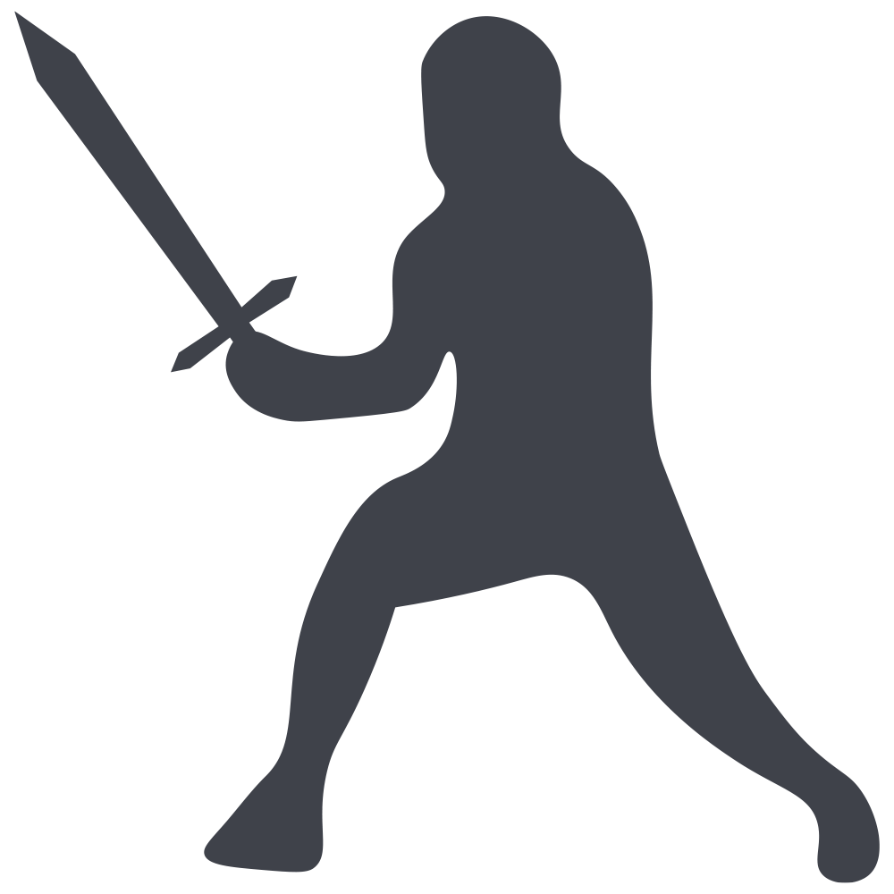
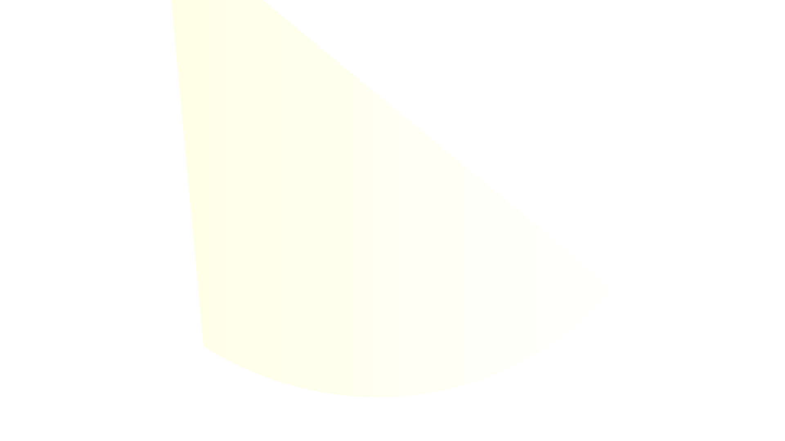
คลิกเพื่อยิงระเบิด
ปืนใหญ่ (1326)
ปืนใหญ่ หมายถึง อาวุธปืนที่มีความกว้างปากลำกล้องตั้งแต่ 20 มิลลิเมตรขึ้นไป โดยมีระยะยิงกลางถึงไกล มีอำนาจทำลายล้างสูง ใช้การยิงหัวกระสุนด้วยแรงดันจากการเผาไหม้ดินส่งกระสุนให้เกิดก๊าซจนเคลื่อนที่ออกไป โดยสามารถทำการยิงได้ทั้งแนววิถีราบหรือวิถีโค้ง โดยภายในหัวกระสุนจะบรรจุวัตถุระเบิดและตัวจุดชนวน เมื่อหัวกระสุนตกกระทบเป้าหมายจะเกิดการระเบิดสร้างความเสียหายอย่างรุนแรง ปัจจุบันคำว่า "ปืนใหญ่" (Cannon) ในภาษาอังกฤษเริ่มถูกใช้น้อยลง โดยถูกทดแทนด้วยคำเรียกปืนขนาดลำกล้องใหญ่ประเภทต่างๆ ที่ถูกพัฒนาขึ้นในสมัยต่อๆมา เช่น ปืน howitzer หรือ ปืน mortar (ปืนครก) แต่ในภาษาไทยมักเรียกรวมว่าเป็น "ปืนใหญ่" ทั้งหมด
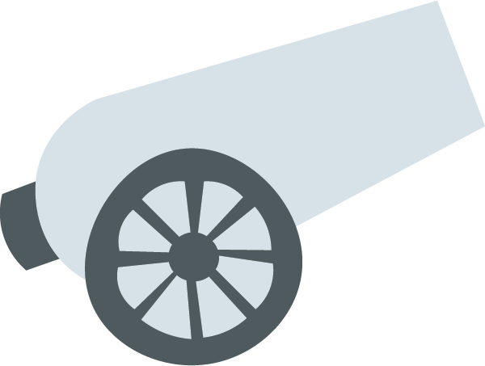
คลิกเพื่อยิงปืน
ปืนคาบชุด (1450)
ชาวโปรตุเกสได้นำปืนคาบชุดเข้ามาในอาณาจักรอยุธยาช่วงประมาณ 100 ปีหลังจากนั้น ซึ่งอยู่ในรัชสมัยของสมเด็จพระไชยราชาธิราช ซึ่งนำมาใช้สู้รบกับพม่าจนได้รับชัยชนะอย่างง่ายดายในปี พ.ศ. 2089 จนมีการตั้งกองอาสาโปรตุเกสขึ้นมาเพื่อทำหน้าที่สู้รบโดยใช้อาวุธปืนคาบชุด และสอนการใช้อาวุธปืนไฟให้กับชาวไทย
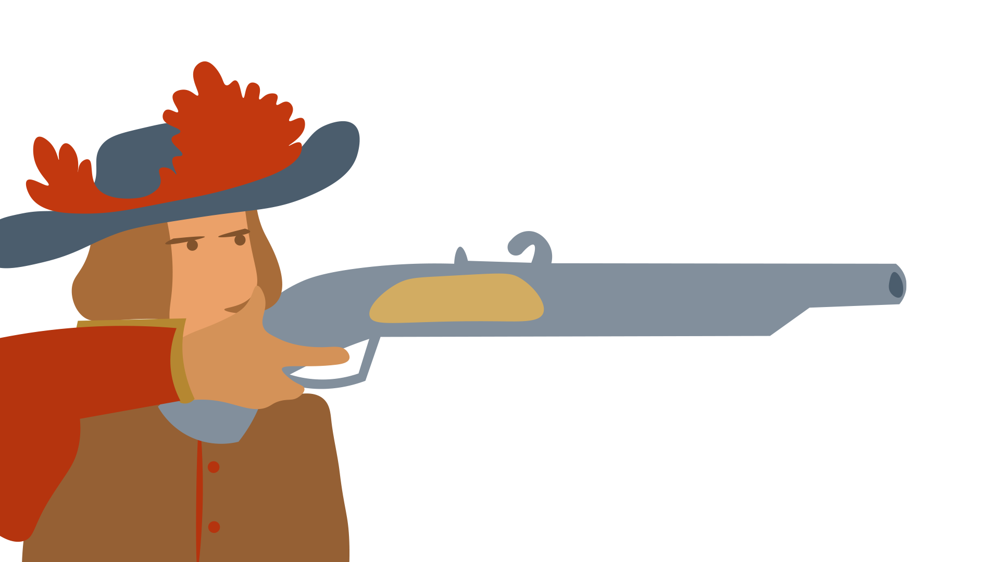
บาซูก้า (1942)
อาวุธเครื่องยิงจรวดต่อสู้รถถังแบบไร้แรงสะท้อนถอยหลังขนาดพกพา ได้ถูกใช้งานอย่างแพร่หลายโดยกองทัพสหรัฐ จุดที่โดดเด่นที่สุดคือจรวดเชื้อเพลิงแข็งสำหรับการขับเคลื่อน มันสามารถใช้ได้กับหัวรบระเบิดแรงสูงต่อต้านรถถังที่จะยิงเข้าใส่กับยานพาหนะหุ้มเกราะ รังปืนกล และป้อมปราการบังเกอร์ที่อยู่ในระยะไกลกว่าการขว้างระเบิดมือหรือทุ่นระเบิด
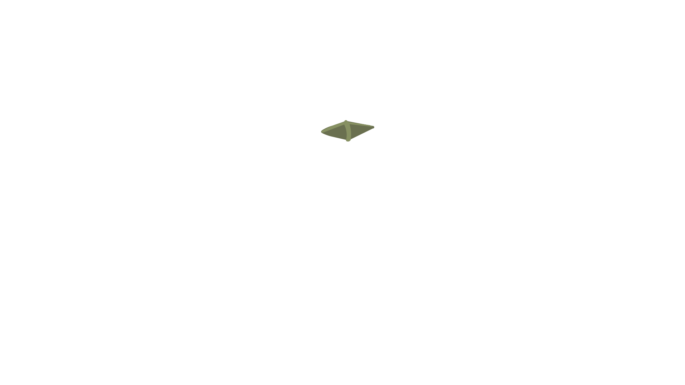
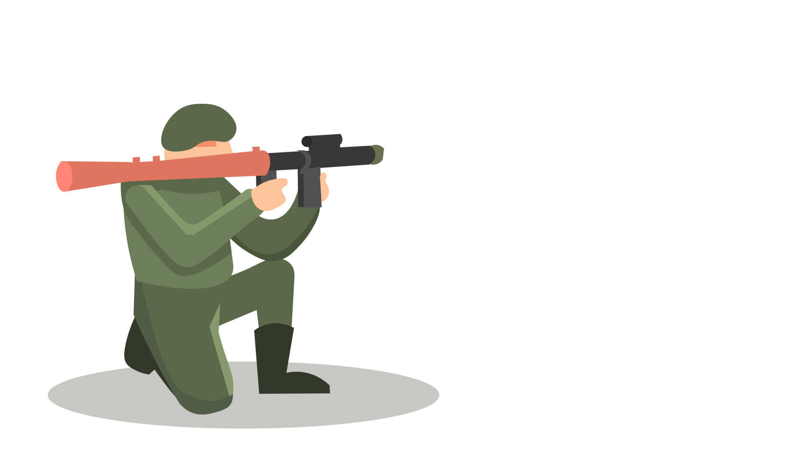
นิวเคลียร์ (1945)
อาวุธนิวเคลียร์เพียงสองชิ้นเท่านั้นที่เคยใช้ตลอดห้วงการสงคราม ทั้งสองครั้งโดยสหรัฐอเมริกายามสงครามโลกครั้งที่สองใกล้ยุติ วันที่ 6 สิงหาคม พ.ศ. 2488 วัตถุประเภทจุดระเบิดยูเรเนียม (uranium gun-type) ชื่อรหัสว่า "ลิตเติลบอย" ถูกจุดระเบิดเหนือนครฮิโรชิมาของญี่ปุ่น อีกสามวันให้หลัง วันที่ 9 สิงหาคม วัตถุประเภทจุดระเบิดภายในพลูโตเนียม (plutonium implosion-type) ชื่อรหัสว่า "แฟตแมน" ระเบิดเหนือนางาซากิ ประเทศญี่ปุ่น
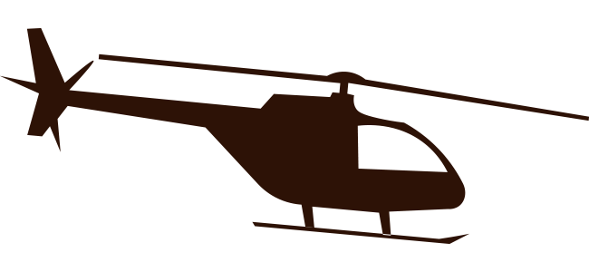
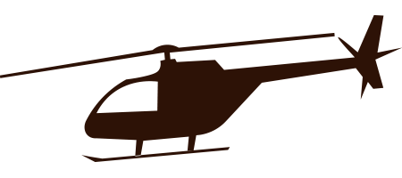
Cyber Warfare (2000)
การใช้เทคโนโลยีคอมพิวเตอร์เพื่อขัดขวางกิจกรรมของรัฐหรือองค์กร โดยเฉพาะอย่างยิ่งการโจมตีที่มีเจตนาเกี่ยวกับระบบสารสนเทศเพื่อวัตถุประสงค์เชิงกลยุทธ์หรือการทหาร
กรุณากรอกรหัสที่เป็นตัวเลข
เข้าสู่ระบบสำเร็จ
เข้าสู่ระบบล้มเหลว
Drone (2002)
การโจมตีโดยอากาศยานต่อสู้ไร้คนขับหนึ่งลำหรือมากกว่า หรืออากาศยานไร้คนขับเชิงพาณิชย์ที่ปรับใช้เป็นอาวุธ การโจมตีมักเกี่ยวข้องกับการยิงขีปนาวุธหรือปล่อยระเบิดใส่เป้าหมาย โดรนอาจจะติดตั้งอาวุธ เช่น ระเบิดนำวิถี, ระเบิดดาวกระจาย, วัตถุที่ก่อให้เกิดเพลิง, ขีปนาวุธอากาศสู่พื้น, ขีปนาวุธต่อสู้รถถัง หรืออาวุธนำวิถีความแม่นยำสูงชนิดอื่น ตั้งแต่ช่วงเปลี่ยนศตวรรษ การโจมตีด้วยโดรนส่วนใหญ่ได้ดำเนินการโดยกองทัพสหรัฐในต่างประเทศ เช่น อัฟกานิสถาน, ปากีสถาน, ซีเรีย, อิรัก, โซมาเลีย และเยเมน โดยใช้ขีปนาวุธอากาศสู่พื้น
คนดู ได้รู้ถึงอะไรบ้าง